Fix the hypotheses, tests and evaluation windows before results exist; tag the plan so the timing is traceable.
The problem
A volatility forecaster needs to know whether implied variance adds information beyond a HAR forecast of future S&P 500 variance. The platform also has to prove every number it serves, from a forecast statistic to a retrieval result. The research and the FOMC document pipeline need traceable evidence without using text as a model feature.
The approach
Run walk-forward forecasting models alongside the FOMC document, search and agent platform.
Trace claims to the evidence register, keep the agent copy-only, and check for leakage and licence boundaries.
- Test size
- 1,632ex-window forecasts
- HAR-X vs HAR
- p = 0.0009Clark–West · ex-window
- Retrieval
- 0.589 vs 0.389fused vs dense recall@5
- Agent
- 38/45accuracy · USD 0.064 total
1. The question and the design
The forecast study asks whether VIX-implied variance adds information beyond lagged realised variance in a HAR forecast of 30-day total variance. The specification and evaluation were pre-registered under tag v0.1-prereg. A walk-forward design refits on past data and evaluates later dates; the test period contains 1,703 forecasts across 82 refit blocks.
There is one headline test: the one-sided Clark–West comparison of HAR-X with HAR. The Feb–Apr 2020 window rule was fixed after the full-sample result was known and before any ex-window result was computed. The headline therefore reports the full sample beside the pre-specified ex-window sample. Secondary QLIKE comparisons are adjusted together using Holm in both samples; they are reported as not detected after adjustment.
2. Results
These are measured results from the committed study and platform run. Non-rejections are reported as not detected, and the retrieval table retains the earlier hybrid miss beside the later cloud result.
| Question / evaluation | Result | Reading |
|---|---|---|
| Q1 · HAR-X vs HAR (Clark–West, full) | t = 1.557; one-sided p = 0.0597 | Not detected on the full sample |
| Q1 · HAR-X vs HAR (Clark–West, ex-window) | t = 3.14; one-sided p = 0.0009; n = 1,632 | Detected outside Feb–Apr 2020; headline |
| Q1b · HAR-X vs HAR (DM QLIKE) | Full raw → Holm p: 0.737 → 1.000; ex-window: 0.140 → 0.281 | Not detected after Holm in either sample |
| Q1c · MLP vs HAR-X (DM QLIKE) | Full raw → Holm p: 0.849 → 1.000; ex-window: 0.056 → 0.224 | Not detected after Holm in either sample |
| Q1d · HAR vs GARCH (DM QLIKE) | Full raw → Holm p: 0.405 → 1.000; ex-window: 0.173 → 0.281 | Not detected after Holm in either sample |
| Q1d · HAR vs persistence (DM QLIKE) | Full raw → Holm p: 0.027 → 0.107; ex-window: 0.094 → 0.281 | Not detected after Holm in either sample |
| Q2 · Ex-ante spread (IV − HAR) | Full t = 7.80; ex-window t = 7.75 | Positive and significant in both samples |
| Q2 · Ex-post premium (IV − RV30) | Full t = 1.06, p = 0.288; ex-window t = 7.05 | Positive; detected outside spring 2020, not on full sample |
| Q3 · CPI overnight variance | +37% (95% CI +4% to +80%); Holm p = 0.033 | Detected; positive as hypothesised |
| Q3 · FOMC session variance | +84% (95% CI +30% to +160%); Holm p = 0.001 | Detected; positive as hypothesised |
| Retrieval · 15 frozen questions | Step 10b hybrid 0.322; dense 0.389. Step 10c fused 0.589; cloud/local parity 266/266 documents and 6,620/6,620 chunks | Cloud fused result is higher; the earlier hybrid did not beat dense |
| Agent · 15 questions × 3 repeats | 0.844 (38/45); USD 0.064 total | No unverified number reached any answer |
Q1’s regime breakdown is descriptive, has no Holm adjustment, and is not a headline test. Each cell has at least 100 observations; its p-values are one-sided Clark–West values.
| Sample | Grouping | Regime | n | t | One-sided p |
|---|---|---|---|---|---|
| Full | VIX tercile | Low | 282 | 1.0919 | 0.137437 |
| Full | VIX tercile | Mid | 552 | 1.8101 | 0.0351374 |
| Full | VIX tercile | High | 869 | 1.5377 | 0.0620571 |
| Full | Calendar | 2020 | 253 | 1.4683 | 0.0710164 |
| Full | Calendar | 2021–2023 | 753 | 2.0776 | 0.0188748 |
| Full | Calendar | 2024–end | 697 | 2.1867 | 0.0143838 |
| Ex-window | VIX tercile | Low | 273 | 4.6277 | 1.84841 × 10⁻⁶ |
| Ex-window | VIX tercile | Mid | 539 | 2.5191 | 0.00588313 |
| Ex-window | VIX tercile | High | 820 | 2.4809 | 0.00655285 |
| Ex-window | Calendar | 2020 | 182 | 1.5227 | 0.0639161 |
| Ex-window | Calendar | 2021–2023 | 753 | 2.0776 | 0.0188748 |
| Ex-window | Calendar | 2024–end | 697 | 2.1867 | 0.0143838 |
3. The platform
The forecasting study and the document pipeline are separate by design: retrieval supplies evidence and citations, not text features to the forecast models. The platform moves each document through a traceable data path, with parity checks between local and cloud outputs.


- Ingest → Kafka → S3 / Glue / Athena.
- Spark compaction → OpenSearch + Qdrant retrieval.
- Redis cache → API and copy-only LangGraph agent.
- MLflow tracking, drift monitoring, Airflow orchestration, and a local Kubernetes (kind) deployment.
- Event-driven document registry: SNS → SQS → Lambda → DynamoDB (section 4).
4. Event-driven ingestion
Each of the 266 extracted FOMC documents is announced as a document.registered event. SNS delivers the events to an SQS queue, and a Lambda consumer writes a document registry in DynamoDB. The path ran once on live AWS and was destroyed after the run. It shows three behaviours of an at-least-once pipeline.


Delivery is at-least-once. The consumer writes an item only if its content key (document ID + SHA-256) is new, so a re-published or re-delivered event changes nothing.
266 events re-published + 1 raw duplicate → 267 duplicates; still 266 items.
An event with a schema version the consumer does not accept is reported as a batch-item failure, retried by SQS and moved to the dead-letter queue after 3 receives. Because the consumer reports partial batch failures, other messages in the same batch are not retried with it.
3 rejections, DLQ 1, Lambda errors 0.
Accepting the new version is a configuration change, not a code redeploy. A redrive from the dead-letter queue writes the message once; publishing the same content again is a duplicate.
DLQ 0, 267 items; replay → duplicate, still 267.
| Phase | Action | Table items | Outcomes (cumulative) | DLQ | Lambda errors |
|---|---|---|---|---|---|
| R2 | Publish 266 events | 266 | written 266 | 0 | 0 |
| R3 | Re-publish 266 + 1 raw SQS duplicate | 266 | written 266, duplicate 267 | 0 | 0 |
| R4 | Publish 1 poison event (schema v2, not accepted) | 266 | + rejected 3 | 1 | 0 |
| R5 | Accept v1 and v2 (configuration change, no code redeploy) + DLQ redrive | 267 | written 267 | 0 | 0 |
| R6 | Re-publish the same poison content | 267 | duplicate 268 | 0 | 0 |
Every phase met the target stated before the run. Publish-to-write latency for the 266-event run was p50 11 s and p95 17 s, measured to the second. It is set mainly by a maximum concurrency of 2 and a 1-second batching window, and was not tuned. The sanitised destroy log is committed.
Design choices
- SQS between SNS and Lambda gives buffering, batch and partial-failure control, a native dead-letter queue with redrive, and back-pressure through maximum concurrency. SNS leaves fan-out open for a second subscriber.
- The idempotency key is the document content (
doc_id+sha256), not the event ID. A re-extracted document with new content becomes a new version. - A standard queue, not FIFO: ordering is not needed because writes are idempotent and keyed.
- No retry loops in the handler; SQS redelivery is the retry mechanism.
Consumer code · Terraform and phase targets · Findings
5. How every number is checked
The evidence register links each public claim to its committed result, check command, and commit. The full register is in EVIDENCE.md; the table below shows the checks behind the headline.
- Clark–West headline
results/tests_ex_window.parquet→python scripts/run_eval.pyand the pre-committed window rule → commits7775f9d/2b5358f,76ddb6d/11f25f8.- Fused retrieval
results/text/retrieval_eval_10c.parquet→python scripts/run_eval_10c.py, checking the index count before and after → commitf100594.- Agent and cost
results/agent/agent_eval.parquetandagent_eval_summary.json→python scripts/run_agent_eval.py→ commits87a1523and376abe5.- Cloud parity
results/text/10c_evidence.json→python scripts/collect_10c_evidence.pyagainst the recorded AWS run → commit479a395.- Event-driven registry
results/eventdriven/evidence_R2.json…evidence_R6.json→python scripts/collect_eventdriven_evidence.pyagainst the recorded AWS run → commit2a4b668.- Planted-leak check
- The evaluation harness adds the next-session realised variance to a placebo model; its QLIKE reduction is recorded by
planted_leak_drop(). The leaky forecasts are not published. - Licence boundary
- SPY and VIX price series require licensed access. The repository publishes statistics and aggregates, not per-date licensed series.
6. What it does not claim
- This is a research prototype using public data, not investment advice and not a trading system.
- The infrastructure run is evidenced, but the orchestration and Kubernetes deployment are local; this is not a production deployment.
- The event-driven registry is one live run of 266 documents, destroyed afterwards. Its latency was not tuned and is not a throughput benchmark.
- The forecasting results do not establish that VIX-implied variance is useful in every regime or support a trading threshold.
- Agent accuracy is measured on a frozen question set; the verifier’s wrong-field and p-value-precision limits remain open.
Public data: SPY and VIX prices (licensed; only statistics and aggregates published) and Federal Reserve FOMC documents. Not investment advice.